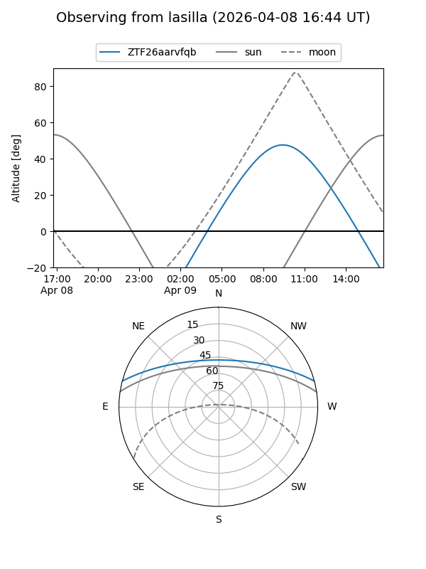
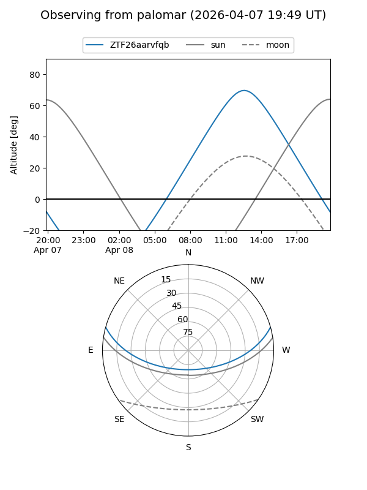

ZTF26aarvfqb
Target ZTF26aarvfqb at 2026-04-08 10:19
Aliases and brokers:
FINK: link
Lasair: link
ALeRCE: link
alt names
ZTF26aarvfqb (ztf,fink_ztf)
Coordinates:
equatorial (ra, dec) = 267.9854,+13.07553
equatorial (HMS+DMS) = 17:51:56.51,+13:04:31.90
galactic (l, b) = (38.2318,+19.00749)
Flags:
Photometry:
last ztfg=18.52
1 ztfg detections
Lightcurve
Visibility


Additional plots